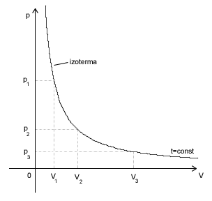

|
|||
|
| • Mechanika » Kinematyka, Dynamika, Praca, moc, energia, Grawitacja, Ruch obrotowy, Statyka, Relatywistyka • Fizyka molekularna i ciepło » Termodynamika, Gazy, Ciecze, Ciała stałe • Elektryczność i magnetyzm » Elektrostatyka, Pole elektrostatyczne, Prąd elektryczny stały, Magnetyzm, Elektromagnetyzm • Zjawiska falowe » Ruch drgający i falowy, Akustyka, Drgania i fale elektromagnetyczne, Optyka • Elementy fizyki wpółczesnej » Dualizm korpuskularno-falowy, Fizyka atomowa, Fizyka jądrowa • Astronomia » Astronomia • Zagadnienia matematyczne » Wektory, Pochodna funkcji, Logarytmy • Tablice » Jednostki wielkości fizycznych, Właściwości fizyczne, Właściwości elektromagnetyczne i falowe, Stałe fizyczne, Tablice matematyczne • O stronie » Autorzy, Bibliografia | |
|
Gaz jest mieszaniną cząsteczek i atomów. Zjawiska, które o tym świadczą to np.:
Niech N będzie liczbą cząsteczek w naczyniu. Naczyniem zaś niech będzie sześcian o krawędzi długości l. Załóżmy, że statystyczna cząsteczka gazu porusza się w tym naczyniu w jednym z trzech kierunków. Niech te kierunki będą prostopadłe do ścian sześcianu. Będziemy rozpatrywać zachowanie jednej cząsteczki. Jej pęd to: Jeżeli cząsteczka ta odbije się od ściany to zmieni swój pęd. Wówczas będzie on równy: W konsekwencji przyrost pędu wynosi: Z II zasady dynamiki wiemy, że popęd siły równy jest przyrostowi pędu: Jest to siła działającą na statystyczną cząsteczkę podczas odbijania jej od ściany naczynia. Zastanówmy się jak wyeliminować ze wzoru czas. Możemy do tego wykorzystać prędkość, bo przecież stosunek drogi do czasu to właśnie prędkość średnia cząsteczki. Zakładamy, że cząsteczka porusza się ze stałą prędkością, więc prędkość chwilowa i stała jest równa: Kolejnym problemem staje się droga. Czas t to czas, w którym zachodzi rozpatrywana zmiana pędu. W tym czasie cząsteczka przebędzie drogę 2l zanim z powrotem wróci do danej ściany. Więc modyfikując dalej nasz wzór otrzymujemy: Gdzie, Ek to energia kinetyczna statystycznej cząsteczki gazu. Doszliśmy w końcu do siły, z jaką działa pojedyncza cząsteczka na ściankę naczynia. Ciśnienie
Mając siłę z jaką oddziałuje statystyczna cząsteczka na ściankę naczynia, możemy wyliczyć z jaką łączną siłą działają na tę ściankę wszystkie cząsteczki w nią uderzające. Nasze założenie na początku było takie, że cząsteczki poruszają się po drogach prostopadłych do naczynia. Tych cząsteczek, które uderzają w rozpatrywaną ścianę naczynia, jest więc średnio . Zatem łączna siła działająca na jedną rozpatrywaną ścianę będzie równa średnio: Z definicji ciśnienia wiemy, że jest nim stosunek działającej siły, do powierzchni na którą ta siła działa. Więc w naszym przypadku będzie to powierzchnia ścianki bocznej: Długość krawędzi podniesiona do trzeciej potęgi to jest objętość naczynia - V więc ostatecznie otrzymamy: Gdzie: N - liczba cząsteczek w naczyniu; V - objętość naczynia; Ek - średnia energia kinetyczna cząsteczek. Wzór ten jest zwany wzorem teorii kinetycznej gazów. Na jego podstawie widzimy:
Bo stosunek mówiłam właśnie o ilości cząsteczek w jednostce objętości. W naszych rozważaniach za naczynie przyjęliśmy sześcian. W praktyce kształt naczynia nie ma znaczenia. Wzór ten jest poprawny dla wszystkich naczyń. Gaz Doskonały
Wiemy już, że ciśnienie zależy od średniej energii kinetycznej cząsteczek. Ale jak zbadać tę energię? Doświadczenie, w którym badamy dyfuzję w różnych temperaturach poucza nas, że cząsteczki gazu poruszają się tym szybciej im większa jest temperatura gazu. Więc energia kinetyczna zależy od temperatury gazu. A mając temperaturę gazu możemy wyliczyć energię z takiego wzoru: k jest to stała Boltzmana. Natomiast i jest równe:
Zatem przekształćmy nasz wzór: W zamkniętym naczyniu, gdzie liczba cząsteczek gazu jest stała, cała prawa strona równania jest stała, bo N jest stałe, oraz c jest stałe. Więc: W ten oto sposób doszliśmy do równania gazu doskonałego, zwanego też równaniem stanu. Mówi ono, że jeżeli dana ilość gazu ulega przemianie (zmieniają się jego parametry) to przemiana zachodzi zawsze tak, by ten stosunek miał zawsze wartość stałą.
Co to oznacza w praktyce? Badając gaz i wykorzystując do tego równanie stanu otrzymujemy poprawne wyniki, jeżeli parametry te nie różnią się bardzo od parametrów w warunkach normalnych. Przy bardzo wysokich temperaturach, czy bardzo dużym ciśnieniu, równanie to nie będzie zawsze prawdziwe. Ale do prostych obliczeń nadaje się on idealnie. Jeżeli mamy np. jeden mol gazu w temperaturze T1, w naczyniu o objętości V1, pod ciśnieniem p1, to równanie naszego gazu wyniesie: Jeżeli teraz zmienimy temperaturę tego gazu na T0=0°C =273°K, to reszta parametrów zmieni się tak, by: Następnie nie zmieniając temperatury zmieńmy ciśnienie gazu na p0=1013hPa. Aby równanie gazu było spełnione musi się zmienić i objętość gazu. Oznaczmy tę objętość jako V0: Mamy więc gaz o temperaturze 273°K i ciśnieniu 1013hPa więc gaz ten znajduje się w warunkach normalnych. Na początku naszych rozważań założyliśmy, że rozpatrujemy 1 mol gazu. Wiadomo, że 1 mol gazu w warunkach normalnych zajmuje objętość V0=22,4 dm3. Możemy więc postawić te wartości do równania: Stała R nazywana jest stałą gazową i ma ona wartość stałą dla wszystkich gazów. Zatem dla jednego mola gazu prawdziwe jest równanie: I równanie to nazywamy równaniem Clapeyrona. Jest ono słuszne tylko dla jednego mola gazu. Ale w łatwy sposób możemy je dostosować do dowolnej ilości gazu. Równanie Clapeyrona dla n moli gazu ma postać: Przemiana izotermiczna
Wiemy, że mając pewien gaz zamknięty w jakimś naczyniu (najlepiej w tłoku) możemy zmieniać parametry stanu tego gazu. Jeżeli działamy cały czas na stałej masie gazu, to równanie stanu tego gazu ma wartość stałą. Załóżmy, że zmieniamy tak parametry stanu gazu, że zmianie ulega ciśnienie i objętość gazu, a stała pozostaje jego temperatura. T=const.
W takim przypadku równanie stanu przyjmie postać: Prawo Boyle'a-Mariotte'a
 Przemiana izobaryczna
Prawo Gay-Lussaca
Przemiana izochoryczna
W tej przemianie stały będzie kolejny parametr stanu gazu, czyli objętość.
Prawo Charlesa
Z prawa Charlesa wynika, że w temperatura 0°K zanika ruch cieplny, a z prawa Gay-Lussaca, że temperatura zera bezwzględnego (0°K) jest nieosiągalna w przyrodzie. Przemiana adiabatyczna
Wszystkie parametry się wówczas zmieniają. Przemiana ta może wystąpić, gdy:
PRAWO POISSONA - wykładnik adiabaty Wykładnikiem adiabaty nazywamy stosunek ciepła molowego przy stałym ciśnieniu do ciepła molowego przy stałej objętości. CIEPŁO MOLOWE Ciepło molowe jest to ilość ciepła potrzebna na ogrzanie 1 mola gazu o 1 Kelwin. Rozpatrzmy dwie sytuacje. Jedna to ogrzewanie 1 mola gazu o 1 Kelwin przy stałym ciśnieniu, druga - przy stałej objętości. W pierwszym przypadku musimy dostarczyć więcej ciepła, gdyż część tego ciepła gaz zużywa na wykonanie pracy, a reszta idzie na przyrost energii wewnętrznej. W drugim natomiast całe dostarczane ciepło idzie na wzrost energii wewnętrznej.
Gazy rzeczywiste
Równanie stanu gazu doskonałego, prawo Avogadra czy wzory na ciepło właściwe opisują jedynie w przybliżeniu właściwości gazów rzeczywistych. To wynika z faktu, iż cząsteczki gazów rzeczywistych nie są punktowe oraz oddziałują między sobą przy większych odległościach siłami przyciągania, przy mniejszych siłami odpychania. Przeprowadzone doświadczenia potwierdziły przypuszczenia, iż w niskich ciśnieniach i wysokich temperaturach wszystkie gazy zupełnie dobrze spełniają równanie stanu gazu doskonałego. Dla każdego gazu rzeczywistego istnieje pewna charakterystyczna temperatura zwana temperaturą krytyczną. W temperaturach niższych od krytycznej ciśnienie gazu rzeczywistego nie może być dowolnie duże; przy pewnym ciśnieniu rzeczywisty gaz ulega skropleniu. Teoria gazu doskonałego nie przewiduje istnienia ani temperatury krytycznej ani w ogóle zjawiska skroplenia. Temperatura krytyczna i skraplanie są nieodłącznie związane z oddziaływaniami miedzycząsteczkowymi, których model gazu doskonałego nie uwzględnia. Oddziaływania międzycząsteczkowe oraz skończone rozmiary cząsteczek zostały w pewnym stopniu uwzględnione w dokładniejszym równaniu stanu gazu nazwanym równaniem Van der Waalsa.: a - stała wiążąca się siłami oddziaływania b - stała wyrażająca objętość zajmowaną przez cząsteczki V - objętość gazu R - stała gazowa T - temperatura gazu Siły międzycząsteczkowe w gazach. Dyfuzja
Spoiwem wiążącym ze sobą cząsteczki są siły międzycząsteczkowe, występujące w dwóch postaciach: sił odpychania i sił przyciągania. Odległości między cząsteczkami pary lub gazu są tak duże, że siły przyciągania międzycząsteczkowego praktycznie nie występują, a ruch cieplny tych cząsteczek staje się ruchem postępowym, przy czym cząsteczki zderzają się wzajemnie i rozbiegają w różnych kierunkach zajmując całą dysponowaną objętość. Wynikiem oddziaływania sił międzycząsteczkowych są zderzenia cząsteczek, wskutek czego uzyskują one różne prędkości i kierunki. Jednakże większość z nich porusza się z prędkościami niewiele różniącymi się od wartości średniej, która jest tym większa, im wyższa jest temperatura oraz im mniejsza jest masa cząsteczki. Od prędkości i odległości miedzy cząsteczkami gazu zależy tzw. droga swobodna, którą przebywa cząsteczka ze stałą prędkością po torze prostoliniowym między dwoma kolejnymi zderzeniami. Mimo, że drogi swobodne poszczególnych cząsteczek różnią się od siebie, to jednak dla większości z nich są bliskie wartości średniej, zwanej średnią drogą swobodną. Wynikiem oddziaływania sił międzycząsteczkowych oraz ruchu cząsteczek jest występowanie w gazach zjawiska dyfuzji, polegającego na wzajemnym przenikaniu się cząsteczek różnych gazów. Szybkość dyfuzji jest tym większa im wyższa jest temperatura. Wynika to z faktu, iż wzrasta energia kinetyczna ruchu cieplnego cząsteczek substancji, które łatwiej poruszają się pomiędzy cząsteczkami drugiej. Wilgotność powietrza i gazów
Powietrze zawiera pewną ilość pary wodnej, co jest wynikiem parowania wszystkich otwartych zbiorników wód: jezior, mórz i rzek. Ponieważ gęstość pary wodnej jest mniejsza od gęstości powietrza, unosi się ona w górę i rozprzestrzenia w atmosferze. Również i gazy przemysłowe zawierają pewną ilość pary wodnej. Miarą zawartości pary wodnej w powietrzu lub w gazie jest wilgotność bezwzględna określająca liczbę gramów pary wodnej zawartej w 1m3 powietrza lub gazu, czyli jej gęstość wyrażoną w g/m3. Stopień nasycenia powietrza lub gazu parą wodną charakteryzuje wilgotność względna W, czyli wyrażony w procentach stosunek ciśnienia pary wodnej do ciśnienia pary wodnej nasyconej w tej samej temperaturze: - ciśnienie pary wodnej - ciśnienie pary wodnej nasyconej Stosunek ten jest z dużym przybliżeniem równy wyrażonemu w procentach stosunkowi wilgotności bezwzględnej do wilgotności maksymalnej, czyli: Wartość wilgotności względnej powietrza najkorzystniejszej dla organizmu człowieka wynosi około 60%.
|
| Copyright © 2003- fizyka.kopernik.mielec.pl |